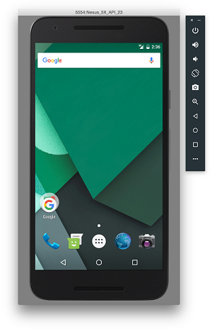

All information used was found here

Step 7: Build Your Application
Once you've finished up creating your app, make sure to build your appliaction! You can do this by selecting Build > Make Project. This will take some time, but once it's done you're set up to run your application!
Step 8: Setting up an Emulator/Device
Running on an Emulator:
- When in android studio, click the app module and select Run > Run.
- Select "Create New Virtual Device"
- Select a phone of your preference and click Next.
- Select the highest API level you can. It will ask you to download this.
- In AVD leave the settings alone, and select to deploy your virtual device. Click OK.
Running on a Device:
- Connect your Android phone to the computer running Android Studio.
- Enable USB Debugging in Developer options on your phone.
- Open settings > System > About phone
- Scroll to the bottom and tap Build number 7 times.
- Return to the previous screen to find Developer options where you can enable USB debugging.
Click the app module and select Run > Run. Select your device and click OK to run!
Now you're finished! Congrats on getting started with Android Studio, and best of luck with continuing your development on mobile!